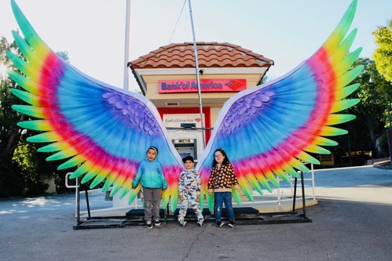
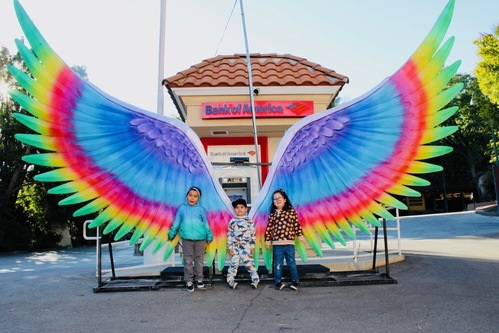
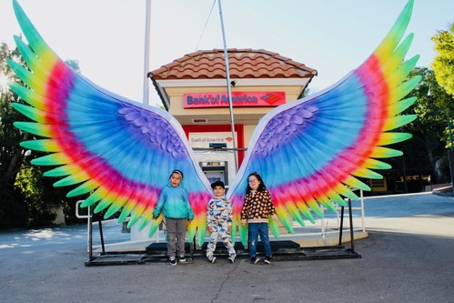

Gabriela Hercules
Hi my name is Gabriela Hercules and I am 20 years old. I am both an introvert and extrovert, I tend to be more on the quiet side, however, in a safe and comfortable environment I step out of my bubble. While I can be more to myself, I still enjoy working and engaging with others. I have good communication and problem solving skills, and are open to any type of work environment as I love the challenge of stepping out of my comfort zone and learning new things. Some other areas that I am strong in are Mathematics, English, Marketing, and Administrative skills. I am also bilingual and speak Spanish.
I am currently employed as a babysitter or a caregiver. My main focus as of right now is respite care, which is looking over someone who’s sick or disabled in order to give short-term relief for the family. I spend time with children who have disabilities as it is a 24-hour job for parents and they deserve time for themselves. I grew up in a big family and have been around children my whole life, and when my siblings had their kids, I knew I wanted to have a career that involved children. I am a responsible, kind-hearted, and friendly person. Since my current job is watching over children, I always try my best to foster a healthy, fun, and active environment for the kids. Especially babysitting special needs children, it is important for me to always be patient, caring, adaptable, understanding, etc. During my time with a child, I like to make a schedule with them so that they feel heard, safe, and comfortable. I do this by creating a list with them, for example I will include some reading time but then ask what kind of fun activity they want to do after completing their reading time. I therefore go back and forth between learning and social skills while also doing what they want to do.
My passion is getting to work with special needs children. They are often misunderstood and treated poorly, and I want to be the person that helps guide them, making sure they feel seen and heard, and know how special and wonderful they truly are. I want to be a part of a team or an environment where their goal is to have a positive impact on these children, because that is my goal. I want to create an educational, healthy, fun, and loving environment for kids. These children deserve the best and nothing less, and I want to be a part of something that will make a difference.
Experience
Respite Caregiver
• Provide care for special needs children
• Supervise acitivites or take them on outings, such as the park or library
• Experience babysitting with my niece and nephew, both who are special needs
Sales Associate
• Assess customer needs and provide assistance
• Maintaining sales floor cleanliness, products, and displays
AVID Tutor Assistant
• Assisted AVID tutors by helping my peers with certain subjects
• Gave tutorials or examples that related to their assignment
• Worked together with my classmates to find the solution
Education
Etiwanda High School
University of California Riverside
Portfolio
.jpg) 

.jpg)
.jpg)
